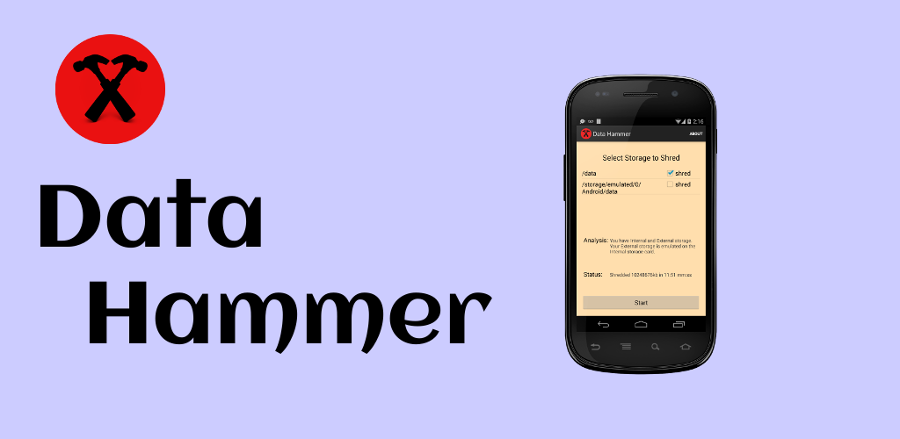

Data Hammer
DataHammer BETA
When you sell your phone, be sure to protect your privacy. Don't leave any personal data behind.
After a factory reset, install and run Data Hammer - smash your data, not your phone!
Data Hammer is fast and easy to use. It shreds, or overwrites your unused storage with random data, so it can't be undeleted.
FAQ
- Isn't it enough to run the factory reset?
- No, commercially available un-delete software can recover this data.
- Can I run other programs while Data Hammer is running?
- It's not a good idea. Data Hammer is resource intensive. Other programs may act flakey or crash, but they will work fine after Data Hammer completes.
- How long does Data Hammer take to run?
- Mileage will vary. It takes about 1 minute per gb of free data on my Nexus4. If your screen is off when DataHammer is finished, it will try to flash an LED.
- Can I stop and restart Data Hammer?
- Yes. You can stop Data Hammer from the task switcher and restart. When restarted, it will pick up where it left off.
- What if I don't want to restart Data Hammer?
- You'll need to release storage that has been shredded. In Settings>Apps>DataHammer, click on 'Clear data'.
- What versions is Data Hammer compatible with?
- While it's designed to run on Froyo forwards, Data Hammer has been tested on handsets running KitKat and Jellybean. There is a list here of tested devices

Data Hammer is free and open source.
Please report all issues with Data Hammer https://github.com/darkoverlordofdata/datahammer/issues